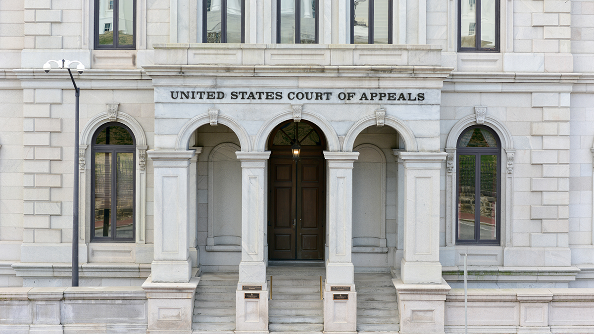

Keep in mind that, due to federalism, there are systems of state courts and a federal system of courts that run parallel to one another. For most crimes and disputes that happen within a state’s borders, the state courts handle those issues. For federal issues, cases follow a specific flow.
Select each tab to learn more.
Now that you have finished your readings, revisit the Critical Thinking Zone at the end of the chapter in your textbook. Read and study the key terms. Then, complete the critical thinking questions and check your answers using your study material. You don’t need to submit your answers to the school. These questions won’t be graded.